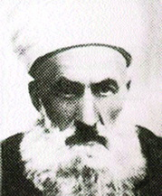

Alim Efendi

1. Devre Kayseri milletvekili olan M. Âlim Efendi, aslen Bünyan doðumludur. Ayný zamanda Müderristir ve Millet Meclisindeki "Ýrþad Heyeti"nin de baþýnda bulunmaktadýr.Halk arasýnda ayrýca "Büyük Hoca" lâkabýyla da tanýnan bu zat, Bediüzzaman Hazretlerinin Van'da kurmak istediði Medresetüzzehrâ projesinin hayata geçirilmesi için bir kànun teklifi hazýrlatmýþ ve bu teklifi mebuslarýn imzasýna açmýþtýr.